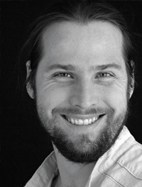

November 18, 2021 ◦ 17:00 - 18:30 ◦ Zoom Meeting
Working fields of a tonmeister outside the concert hall. Insights into daily work of a tonmeister at a research institute. And a few highlights.
Abstract
Most tonmeisters work in theatres, concert halls, in broadcast or other fields of the entertainment industry. There is also a less known working fields which are not so much in the spotlight. Working as a tonmeister at a research institute differs a lot from most other colleagues. Boring office work, some research and a lot of communication and education characterize the work for tonmeisters at Fraunhofer IIS. In this presentation, I will give insights into daily work and highlights.
Bio

Ulli Scuda
Ulli Scuda got a Tonmeister degree at the Film University Potsdam-Babelsberg where he also got his PhD. His experience covers sound recording, sound design and mixing for various film and music formats, ranging from binaural up to 22.2. He was a visiting lecturer at the Ansbach University of Applied Sciences. Today he heads the SoundLab group in the audio department at Fraunhofer IIS where he researches 3D-Audio production and reproduction technologies, as well as microphone arrays and production workflows. His main expertise is immersive audio production, interactive and object based audio.
Add to Calendar
11/18/2021 17:00
11/18/2021 18:30
Europe/Berlin
The daily work of a Tonmeister at a research institute
Working fields of a tonmeister outside the concert hall. Insights into daily work of a tonmeister at a research institute. And a few highlights.
Abstract
Most tonmeisters work in theatres, concert halls, in broadcast or other fields of the entertainment industry. There is also a less known working fields which are not so much in the spotlight. Working as a tonmeister at a research institute differs a lot from most other colleagues. Boring office work, some research and a lot of communication and education characterize the work for tonmeisters at Fraunhofer IIS. In this presentation, I will give insights into daily work and highlights.
Bio
Ulli Scuda
Ulli Scuda got a Tonmeister degree at the Film University Potsdam-Babelsberg where he also got his PhD. His experience covers sound recording, sound design and mixing for various film and music formats, ranging from binaural up to 22.2. He was a visiting lecturer at the Ansbach University of Applied Sciences. Today he heads the SoundLab group in the audio department at Fraunhofer IIS where he researches 3D-Audio production and reproduction technologies, as well as microphone arrays and production workflows. His main expertise is immersive audio production, interactive and object based audio.
Zoom Meeting